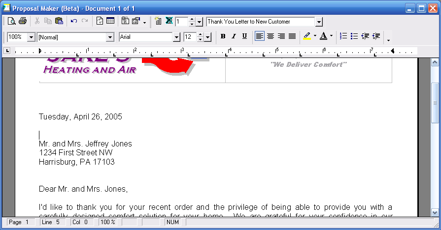

|
Proposal Maker - Overview (Project Menu) |
  
|
Proposal Maker - Overview (Project Menu)
|
Proposal Maker - Overview (Project Menu) |
|
Icon: . Keyboard Shortcut: ALT, P, P
Proposal Maker is a fast and simple program for creating professional sales proposals and other sales related documents. Proposal Maker contains numerous word processing features such as found in Microsoft Word. But more than just a word processor, the main advantage of Proposal Maker is that it creates proposals automatically from equipment selection and cost comparison results obtained from Elite’s Energy Audit program and soon from Elite’s Rhvac and Chvac programs. As equipment is selected and compared, key results such as savings and payback amounts are automatically pasted in both text and graphic form into the proposal. Additionally, pictures of the equipment being proposed can be shown as well. There is also provision for inserting your own pictures into a proposal such as a picture of the old unit that will be replaced or a picture of who will install the unit.
Proposal Maker is very flexible in that multiple proposal formats can be maintained. Use a long form format with lots of detail for that college professor customer or a short form for a single working parent with little time for details. Proposal Maker comes with numerous ready to use proposal formats, but you can create any number of new custom formats. Besides proposal letters, Proposal Maker can also print numerous support documents such as copies of customer referral letters, rebate forms, and credit applications, even factory literature can be printed for the proposed products! In this way, a very persuasive packet of information can be delivered to the customer. The proposal documents can be printed and delivered in full color or they can be created as PDF files and e-mailed directly to the customer right from Proposal Maker. Dramatically increase your sales with Proposal Maker!
